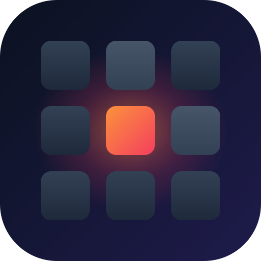

deckddeckd runs a small daemon on your computer and serves a page of buttons to any browser — your phone, an old tablet, a second laptop. Focus Firefox and you get tab controls. Open Gmail and you get compose, reply and archive. No app to install on the phone, no USB hardware.
Most remotes see "Firefox" and stop there. deckd reads the window title, so Gmail, YouTube and Google Meet each get their own buttons, driving the site's own keyboard shortcuts. No browser extension, and any site with shortcuts can have a deck.
A music app, a podcast in a browser tab, a video in mpv: every player shows up in one list with play, pause and skip, a tap away from any deck.
For everything a deck doesn't cover: drag to move the pointer, tap to click, and a keyboard when you need to type.
Animation. The phone is the real client; the window on the right stands in for your desktop.
The strip on the right edge of every deck scrolls whatever's focused — flick it and it coasts, like a real wheel.
Animation.
| deckd | Stream Deck | KDE Connect | Remote Touchpad | |
|---|---|---|---|---|
| Any device as the controller | yes | no | yes | yes |
| Decks switch with the focused app | yes | yes | no | no |
| Decks for websites | yes | no | no | no |
| Trackpad & keyboard | yes | no | yes | yes |
| Media controls | yes | yes | yes | no |
| Open source | GPL-3 | partly | yes | yes |